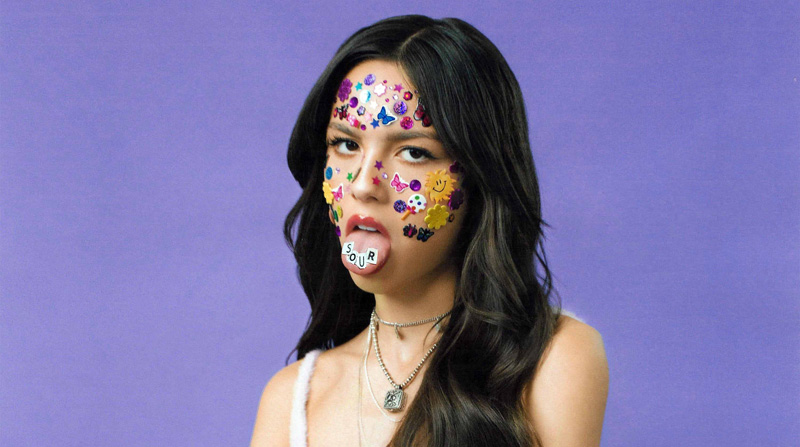
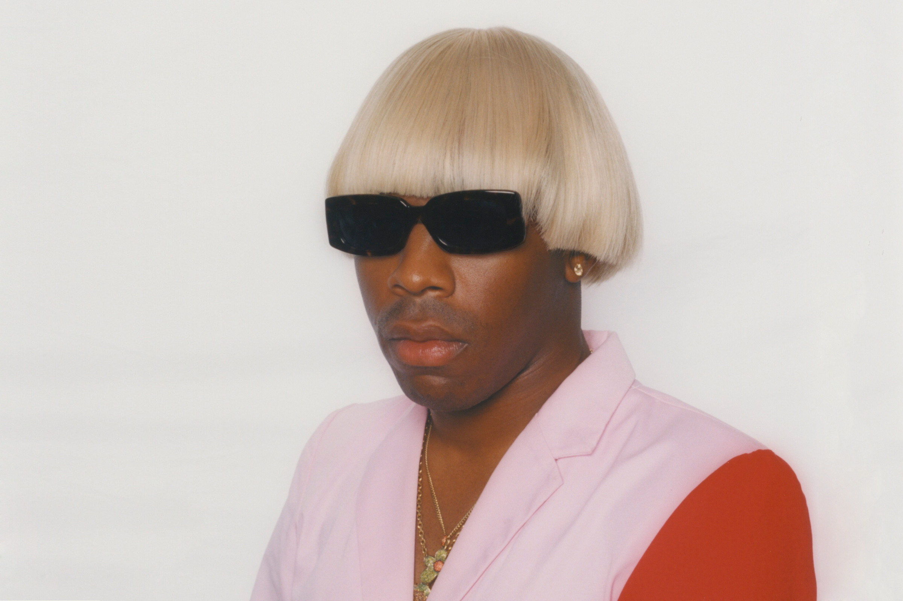
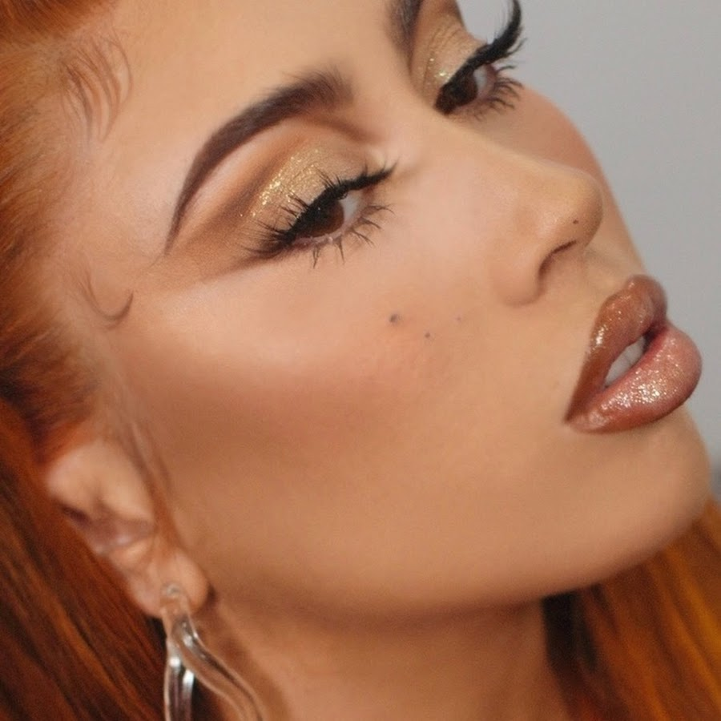

Olivia Rodrigo
Olivia Isabel Rodrigo (Murrieta, California; 20 de febrero de 2003) es una actriz, cantante y compositora estadounidense. Es conocida por interpretar a Paige Olvera en la serie original de Disney Channel, Bizaardvark y a Nini Salazar Roberts en la serie web original de Disney+, High School Musical: el musical: la serie. En 2021 se hizo mundialmente conocida por el primer sencillo «Drivers License» de su disco debut Sour, el cual debutó en el puesto número uno del Billboard 200.En febrero de 2019, fue seleccionada para interpretar el papel de Nina Salazar-Roberts en la serie web original de Disney+, High School Musical: el musical: la serie, estrenada en noviembre de 2019. Rodrigo escribió las canciones 'All I Want' y 'The Rose Song' además co-escribió 'Just For A Moment' con su compañero Joshua Bassett para la banda sonora de la serie.Rodrigo además es una divulgadora y panelista del instituto Geena Davis del género en los medios de comunicación. Ha mencionado a Taylor Swift y a Lorde como sus mayores inspiraciones musicales. En 2020, Rodrigo firmó con la discográfica Geffen Records. El 8 de enero de 2021, publicó su sencillo debut, «Drivers License». La canción fue un éxito rotundo, llegando al n.º 1 de muchas listas de streaming, y llegando a ser elogiada por la misma Taylor Swift. Esto la convierte en una de las artistas revelación del año, e incluso una muy posible nominada a canción del año 2021, según la revista Rolling Stone. El 21 de mayo de 2021 sacó a la venta su álbum debut llamado Sour tanto en formato físico como en plataformas digitales.El 15 de julio de 2021 fue invitada a la Casa Blanca por Joe Biden bajo una campaña para hablar e informar y alertar a los jóvenes estadounidenses sobre la importancia de vacunarse contra la COVID-19.
Canciones que me gustan
Tyler, The creator 
Tyler Gregory Okonma nacio en Los Ángles, California un 6 de marzo de 1991, conocido artísticamente como "Tyler, the Creator," es un rapero, compositor, productor, actor, escritor, director y diseñador estadounidense. Después de una larga contribución en los primeros trabajos de Odd Future, Tyler lanzó su primer mixtape como solista, Bastard, en 2009. Tras lanzar su álbum de estudio debut en 2011, Goblin, Okonma firmó un contrato con Sony Music para él y su discográfica, Odd Future Records.2 Con fuertes influencias de horrorcore en sus primeros trabajos, Tyler fue criticado por su uso de homofobia y misoginia en sus letras. Luego lanzaría sus álbumes Wolf (2013) y Cherry Bomb (2015), que provocarían un cambio progresivamente en el estilo de música de Tyler, pasando del género del rap e incursionando más en el jazz y el neo-soul. Esto desembocaría en el lanzamiento de su álbumes, Flower Boy (2017), IGOR (2019) y Call Me If You Get Lost (2021), los cuales recibirían la aclamación por parte de la crítica y los fans, y con estos dos últimos debutando como número 1 en la lista de éxitos Billboard 200. Además, en los últimos años, Tyler se establecería a sí mismo como una importante figura en la moda y el estilo, habiendo establecido importantes relaciones con marcas como Vans, Lacoste o Converse.
Canciones que me gustan
Kali Uchis
Karly Marina Loaiza en Alexandria, Virginia un 17 de julio de 1994,1 conocida profesionalmente como Kali Uchis, es una cantante, compositora, directora, actriz, diseñadora y empresaria estadounidense-colombiana, que saltó a la fama internacional en 2021 con el gran éxito de su canción «Telepatía», perteneciente al segundo álbum de estudio de la cantante titulado Sin Miedo (Del Amor y Otros Demonios), publicado el 18 de noviembre de 2020.67 Previo a esto, había lanzado un mixtape, Drunken Babble (2012), dos EP, Por Vida (2015) y To Feel Alive (2020) y su primer álbum de estudio titulado Isolation (2018). Es la primera cantante colombiana en recibir un Grammy en una categoría no latina, con la canción «10%» en colaboración con el productor haitiano-canadiense Kaytranada en 2021.
Canciones que me gustan
Mac Miller

Malcolm James McCormick (Pittsburgh, Pensilvania; 19 de enero de 1992-Studio City, California; 7 de septiembre de 2018), más conocido por su nombre artístico Mac Miller, fue un rapero, cantante y productor discográfico estadounidense. Miller comenzó su carrera en la escena hip hop de Pittsburgh en 2007, a la edad de quince años. En 2010, firmó un contrato discográfico con el sello independiente Rostrum Records y lanzó sus innovadores mixtapes K.I.D.S. (2010) y Best Day Ever(2011). Su primer álbum de estudio de Miller, Blue Slide Park (2011), se convirtió en el primer álbum de debut distribuido de forma independiente en encabezar el Billboard 200 desde 1995. En 2013, fundó el sello discográfico REMember Music. Después de su segundo álbum de estudio, Watching Movies with the Sound Off (2013), dejó Rostrum y firmó con el sello principal Warner Bros. Records en 2014. Con ellos, lanzó cuatro álbumes de estudio: GO:OD AM (2015), The Divine Feminine (2016), Swimming (2018) y su álbum póstumo Circles (2020). Por Swimming, fue nominado póstumamente a un premio Grammy al Mejor Álbum de Rap. También se desempeñó como productor de discos para varios artistas, incluido él mismo, bajo el seudónimo de Larry Fisherman.